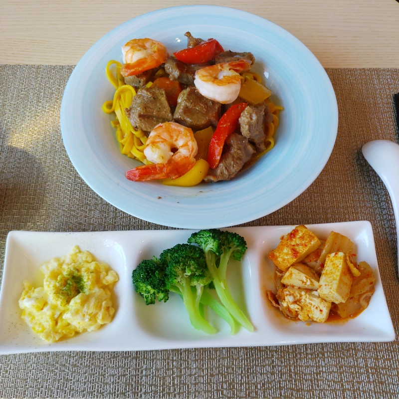

[竹北] 茶甸1319
| 餐廳名稱: | 茶甸1319 |
|---|---|
| 地 址: | 新竹縣竹北市新溪街18號 |
| 營業時間: | 週一~週五 11:00 ~ 20:00 |
| 週六 09:00 ~ 21:00 | |
| 週日 08:30 ~ 18:00 | |
| 電 話: | 0966 558 855 |
這家餐廳位於竹北夜市那一區，附近蓋了很多的高樓大廈，但人搬進來住相對少，跟竹北老市區比起來 稍微荒涼一些，所以停車方便一點。 茶甸1319 在一間新大樓的一樓，剛開始沒多久吧，裝潢都還很新。看它新新地，有假日早午餐，就來試試看了。 茶具蠻別緻的，茶葉也用的不錯，三明治、中式簡餐、甜點也都中規中矩。
進門後約3公尺，包了一圈粉紅色的地板、牆壁、天花板，有點奇怪的造型，櫃台在這個粉紅圈內。
櫃台上有個低溫櫃，廚師只有午晚餐兩個時段才進駐吧，在那之前，三明治只有做好放在這個低溫櫃當中的。
粉紅圈內，也有一部分用餐區，不過今天是坐門口沙發。
菜單第一頁 都是飲料。
菜單第二頁有輕食，不過 11:00 才能點，當天起床起的晚，到的時候已經10點出頭了，先點飲料及三明治，其他的就11點以後再出餐。
門口促銷的餐點，其中幾道菜是菜單沒有的。
咖啡，中規中矩。
三明治 因為是11點之前點的，要看低溫櫃裡面做好的三明治有哪些，今天挑了 鮪魚蛋沙拉三明治，這個配方也是很難失敗，中規中矩。有再烤一下才出餐。
黑糖珍珠鮮奶茶，也是中規中矩。

看它茶的方面似乎有專業，今天沒有直接點貴貴的老茶，先點個台灣茶 - 柚香黃金白毫， 其實這就是東方美人茶，是一種被小綠蟬咬過的茶葉， 咬過的茶葉反而有特殊甘醇甜美香味，所以又被叫膨風茶，是說被蟲咬的茶還能賣錢，太膨風了。 看這茶具有點特殊，各式茶具都齊全，有專業的感覺。還有提供沙漏，店家告知，沙漏倒完 就可喝第一泡茶。
第一泡倒出來了，沙漏反轉 只是好玩，第二泡等待的時間應該要超過第一泡。新竹縣有許多 東方美人茶 種的不錯的，國家也有辦東方美人茶比賽， 那些得獎的東方美人茶，千金難買啊。店家選用的東方美人茶 也是有點水準，有好喝。看起來，下次可以來試 老茶了。
海陸蝦拚套餐。我會比較希望口味再重一點，這只是個人喜好，一般健康導向的民眾，應該會覺得還不錯吃。 
打拋豬套餐。也算是包裝得不錯，大致上也是中規中矩。
套餐附的水果、甜點。另外再單點一個 提拉米蘇，這是直接去低溫櫃選的，菜單沒有，而且看菜單也沒用，低溫櫃沒有的話，點了也沒用。 提拉米蘇 甜甜的，配合巧克力粉的苦味，口味很正常好吃。
茶甸1319 的飲料比輕食強一些，飲料的專業度不錯，蠻適合找朋友來這裡聊天的。 假日來吃早午餐 也蠻好的。